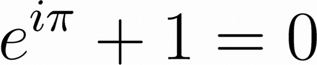
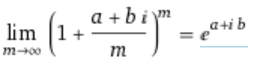

Euler's identity is one of the most famous mathematical expression, in at least small part because at first glance it looks completely nonsensical. My goal is to give at least some vague intuition and turn the nonsensical into the somewhat-sensical.
I am using following equation and varying m to approximate and show the exponential function with a complex argument. As m increases, the approximation gets more accurate.
